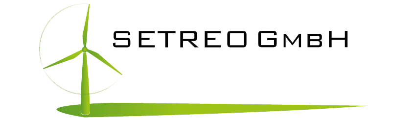
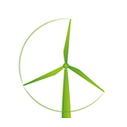
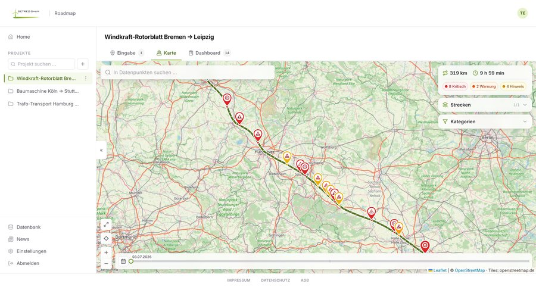

setreo-cloud.com
Route intelligence for heavy & oversized transport
Check any route against every official German obstacle source, and know exactly where it will pass. In seconds.
Whether an oversized or heavy transport can actually drive a route depends on data that sits scattered across dozens of public authorities, and it changes every single day.
One unmarked low bridge or weight-limited crossing means a forced detour, a damaged load, or a blocked convoy.
Thousands of construction sites open and close every week across federal, state and city road networks.
Autobahn GmbH, 16 federal states and dozens of city portals, each with its own format and update cycle.
Incompatible formats. GeoJSON, DATEX II, PDF, phone calls. Nothing comparable, nothing combinable.
No direction or time awareness. A closure on the opposite lane still triggers a false alarm.
No proof. No documentation for the permit file, and none for liability if something goes wrong.
Single point of failure. The know-how lives in one experienced dispatcher's head.
Roadmap takes the route you already plan to drive, checks it against every official German obstacle source, and tells you exactly where it will pass and where it will not.
Start and destination, a Google Maps link, or a file upload. Roadmap reads the route you plan to drive, on the real road network.
Dozens of official sources are matched to your route. Every finding is severity-graded, direction-aware and time-window aware.
Every obstacle on the map and in a PDF. Ready for dispatch, the permit file and the driver.

This is exactly what your dispatch sees: a real heavy transport, checked end to end in the browser.
Start and destination, a Maps link or a file. Plus a full waypoint editor.
Autobahn GmbH, the federal Mobilithek, plus state and city portals.
Clearance, weight limits, road works, bridges and tunnels, all severity-graded.
Opposite-lane and out-of-window obstacles are filtered out automatically.
Documented, timestamped discussion on every obstacle, ready for the permit file.
Attach to the permit file, or share a live link. The recipient needs no login.
A searchable archive of past approved heavy transports. Reuse corridors that already cleared the authorities as a proven planning basis.
Not just check a route, generate one. Automatic routing for heavy and oversized loads that avoids known clearance, weight and construction restrictions.
Expanding official obstacle data across the DACH region (Austria and Switzerland), then France and further European markets.
Per-vehicle height, weight and axle profiles applied automatically, with export toward the official permit application.
Your team, your seats, your regions. We set the data scope for the areas you drive. Onboarding in days, not months.
Paste a Maps link or enter start and destination. Roadmap checks the route against every monitored source instantly.
Attach the PDF to the permit file and share a live link with driver or authority. Full audit trail included.